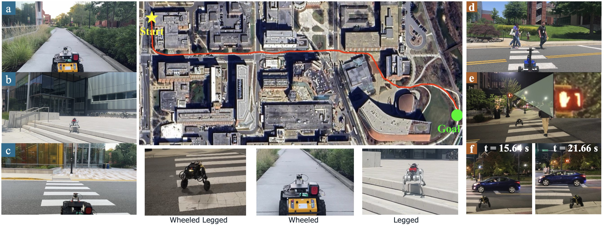
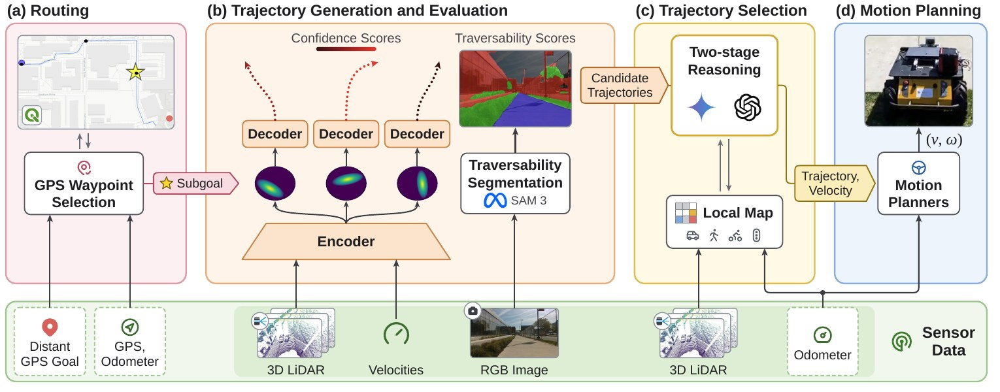
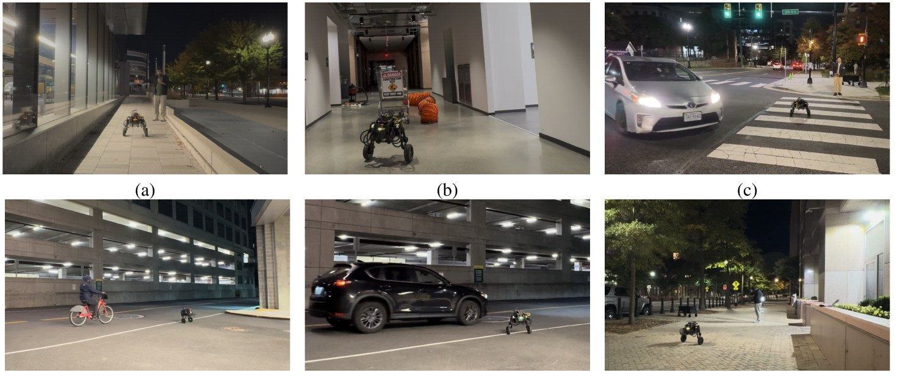

MOSU2: Long-range Navigation System with Multi-modal Scene Understanding
1Stanford University 2George Mason University 3University of Maryland, College Park · *equal contribution
Abstract
Reliable long-range outdoor navigation requires mobile robots to assess terrain traversability, interpret social and traffic context, and respond to the evolving behavior of surrounding road users. These requirements are tightly coupled at crossings and intersections, where the appropriateness of a trajectory depends on both contextual cues and road-user motion.
Building on MOSU, we present MOSU2, an integrated navigation framework that combines route guidance, multi-modal traversability analysis, and motion-grounded contextual reasoning. It maintains a local map of tracked road users, and a two-stage multi-agent architecture first lets a context agent decide from RGB observations whether further investigation is needed; only then does a decision agent retrieve road-user states and select a trajectory. Grounding interpretations in measured motion supports decisions about approaching, stopping and yielding vehicles, traffic signals and pedestrian activity.

Contributions
Method

Routing
A public routing service yields GPS subgoals about 35 m apart, converted to the odometer frame and used as directional guidance rather than exact targets, so no prebuilt metric map is needed.
Trajectory generation and evaluation
A CVAE-based generator (MTG) produces multiple candidate trajectories covering traversable regions from LiDAR and robot velocity. RGB semantic segmentation adds robot-specific traversability, since geometry or color alone each fail in some scenes.
Two-stage trajectory selection
Stage 1 – the context agent screens the current RGB view with route guidance and trajectory assessments, supporting routine subgoal-directed navigation and flagging situations that need investigation.
Stage 2 – the decision agent analyzes recent frames (5 frames over 2.5 s), retrieves geometric and dynamic layers (e.g. a vehicle's velocity) from the local map, and selects the trajectory and velocity mode, combined with geometric confidence, semantic traversability and progress to the subgoal.
Real-world Results

| Scenario | MOSU | MOSU2 | ||||
|---|---|---|---|---|---|---|
| Nav. success % | Latency s | Det. acc. % | Nav. success % | Latency s | Det. acc. % | |
| Stop gesture | 0 | 1.61 | 0 | 67 | 3.52 | 89 |
| Construction site | 50 | 1.68 | 100 | 100 | 5.16 | 100 |
| Signalized crosswalk | 0 | 1.90 | 41 | 100 | 4.72 | 93 |
| Road + vehicles/bikes/peds | 56 | 1.785 | 50 | 100 | 4.95 | 89 |
| Unsignalized road | 100 | 1.74 | 100 | 100 | 5.75 | 86 |
MOSU2 detects relevant conditions grounded in measured motion, avoiding both overly conservative stops and premature entry, at the cost of higher latency from multi-frame analysis and map retrieval.
Inherited MOSU traversability (GND dataset)
| Method | Modality | Traversability % ↑ | Distance to target % ↑ | Inference s ↓ |
|---|---|---|---|---|
| PIVOT | RGB + Language | 70 | 69 | 2.30 |
| ViNT | RGB | 57 | 62 | 0.69 |
| NoMaD | RGB | 59 | 61 | 0.24 |
| MTG | Points | 61 | 64 | 0.01 |
| DTG | Points | 67 | 66 | 0.13 |
| VL-TGS | Points, RGB, Language | 65 | 70 | 2.31 |
| MOSU | Points, RGB, Language | 77 | 73 | 2.30 |
Limitations
Performance depends on the quality of geometric, semantic and dynamic observations (occlusion, sparse LiDAR, association errors) and on the first stage recognizing when to escalate. Reasoning latency of up to 5.75 s means the scene may change before a decision executes. Future work: uncertainty-aware escalation, lightweight screening models, more robust temporal association and adaptive candidate generation.
BibTeX
@article{liang2026mosu2,
title = {MOSU2: Long-range Navigation System with Multi-modal Scene Understanding},
author = {Liang, Jing and Hou, Zhenyu and Kirubaharan, Senthurbavan and Mondal, Md Safwan and Gudivada, Ashok and Xiao, Xuesu and Baldonado, Michelle Q. Wang and Cousins, Steve and Manocha, Dinesh},
year = {2026}
}